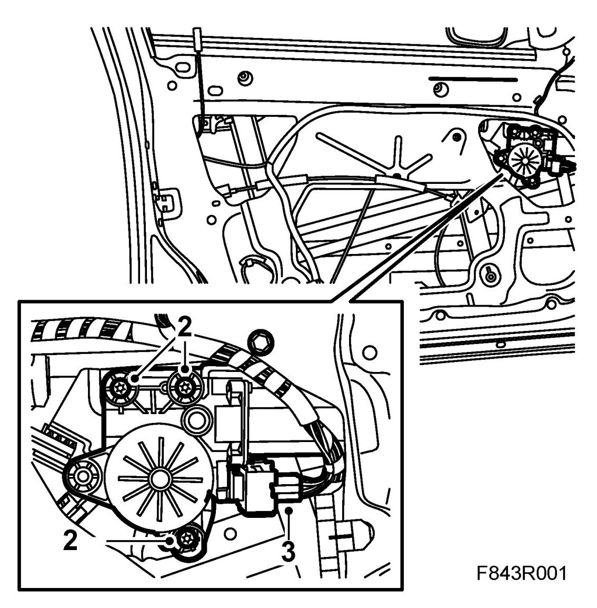
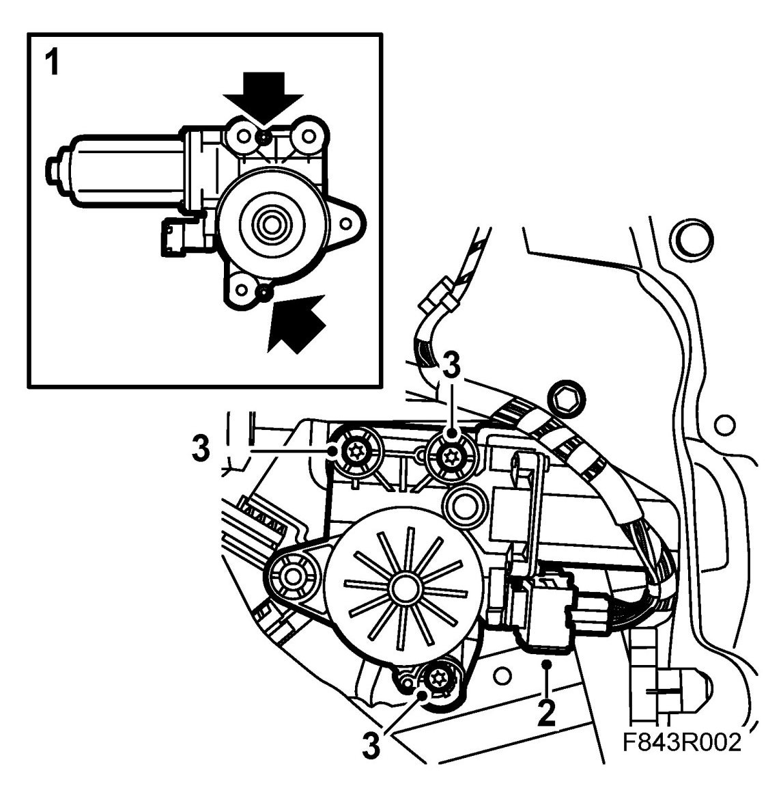

Front Door Window Motor: Service and Repair
Window Lift Motor, Front
To remove
1. Remove Door trim, front 4D or Door trim, CV and fold down the water barrier.
2. Remove the bolts securing the electric motor.

3. Lift out and unplug the motor.
To fit
1. Guide in the motor using the locating pins.

2. Plug in the connector.
3. Fit the bolts securing the motor.
4. Plug in the window lift connector to the door trim. Close and open the window a few times to check its operation.
5. Fit the water barrier and Door trim, front, 4D.
Cars with pinch protection: Perform Calibration of pinch protection.